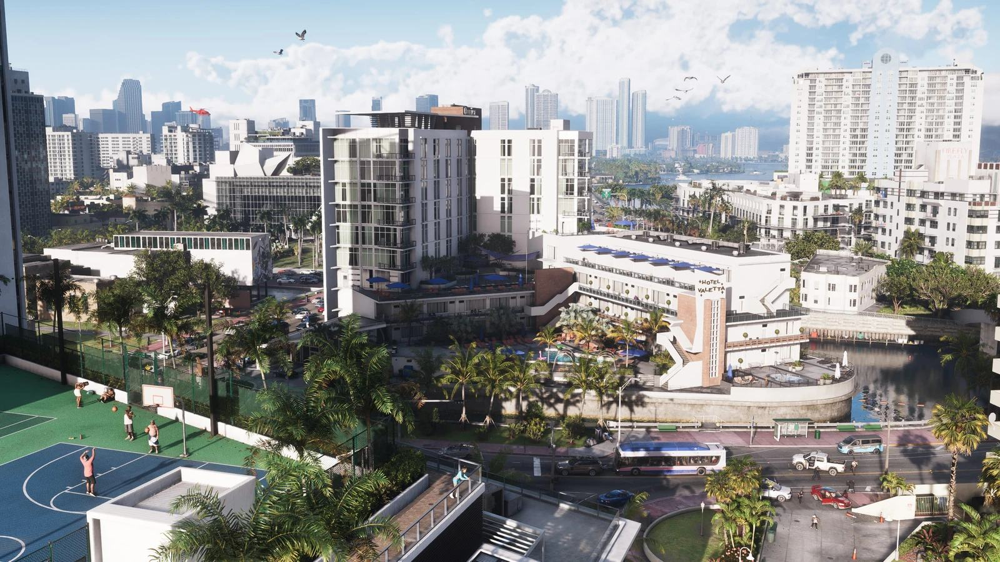

GTA 6: PS5 or Xbox Series X|S?

The unlock difference, in plain terms
The rollout reached each region at its own midnight on both consoles. The one launch-night twist was on Xbox: because its unlock followed the console's region setting, around 2 million players set their consoles to New Zealand and started hours early, while PlayStation players needed a separate New Zealand account and a second purchase to do the same (Reported: Ampere Analysis estimates, via JVCom). See the full table on the release date page.
What is the same
- Price — $79.99 Standard / $99.99 Ultimate in the US on both stores.
- Download size — plan for up to 212 GB of free space either way. Use the download-time calculator before launch night.
- Pre-order bonus — the Vintage Vice City Pack applies on both platforms for orders before 20 November.
Performance: what we know after launch
On performance, the two consoles are equal where it counts: GTA 6 runs at 30fps on both PS5 and Xbox Series X|S. Rockstar confirmed the 30fps target before launch, and there is no 60fps performance mode on either console — see our best settings guide for what that means in practice. The real differences between the versions are the controller, the store and your existing game library, not frame rate. Not announced
Play on the console you own. If you own both, neither console gave an official head start; the only launch-night edge went to Xbox players willing to switch their console region to New Zealand.